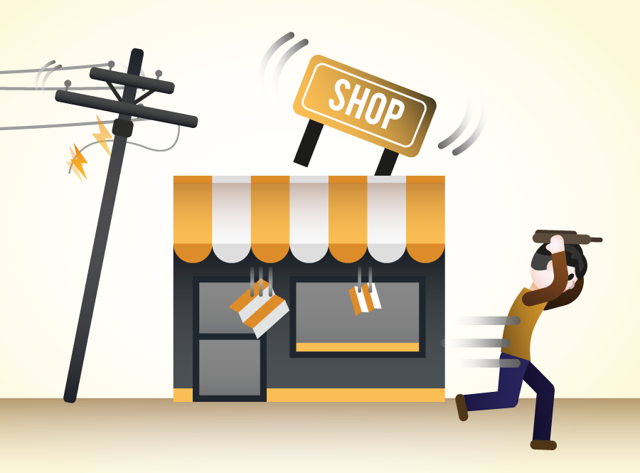

지진이 났을 때 가장 위험한 것은 유리창, 간판, 콘크리트 조각 같은 파편입니다. 옷이나 가방으로 머리를 보호하고 건물 벽면으로부터 떨어져 있도록 합니다.
담장은 쉽게 무너집니다. 담장 옆에 서 있지 않도록 합니다. 나무나 전봇대가 쓰러질 수 있는 반경에서도 벗어나야 합니다.
지진 발생시 실외에서 가장 안전한 장소는 사방에 아무것도 없는 공터입니다. 야외 경기장에서는 출구로 몰려가는 것보다 넓은 운동장으로 피하는 것이 더 안전합니다.
운전 중에 지진이 나면 비상등을 켜고 천천히 브레이크를 밟아 차를 세우고, 차 안에서 지진이 멈추기를 기다립니다.
쓰러지기 쉬운 나무, 전봇대, 신호등, 광고판 등으로부터 충분히 떨어진 곳에 정차해야 합니다. 터널과 다리는 빨리 벗어나야 하고, 육교나 고가도로 아래에도 차를 세우지 말아야 합니다.
지진이 멈춘 후에도 다리 위를 주행하지 않도록 합니다. 목적지가 강 건너편에 있더라도 재난 당국의 교량 안전 확인이 있을 때까지 머무를 곳을 찾으세요.